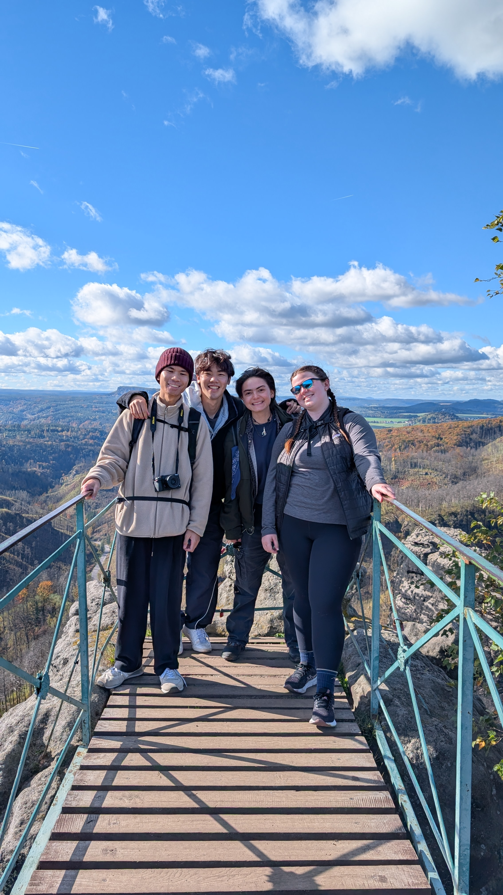
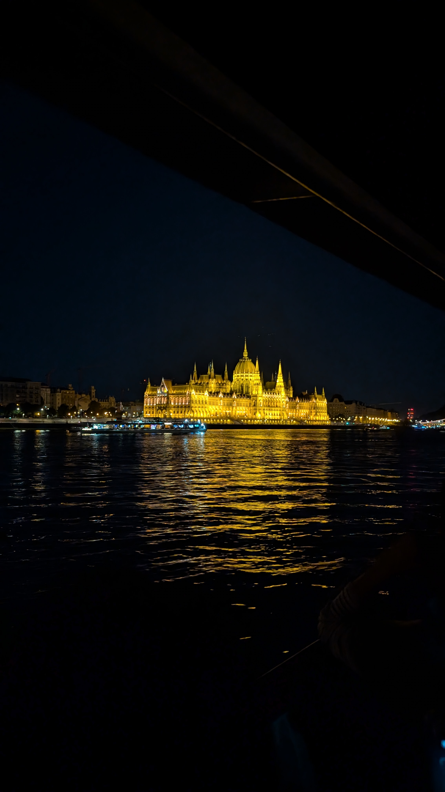
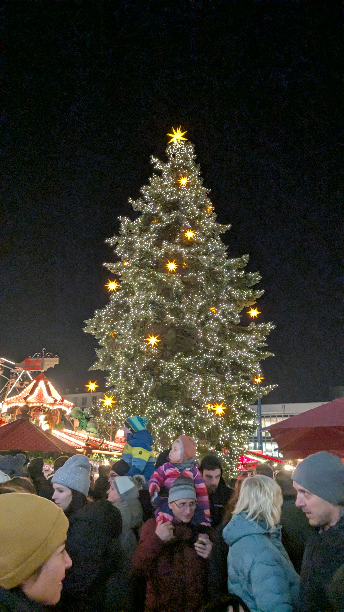
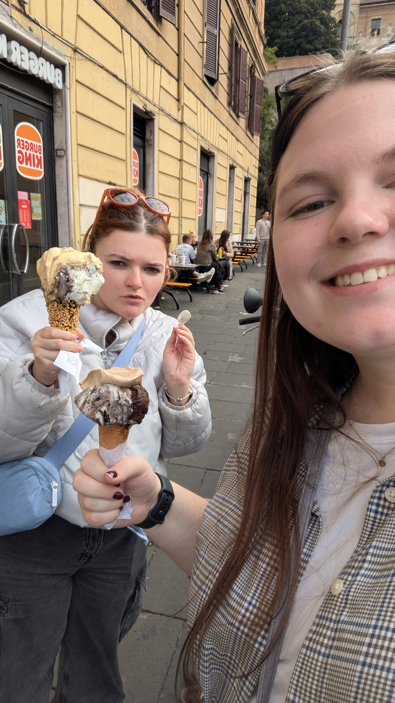
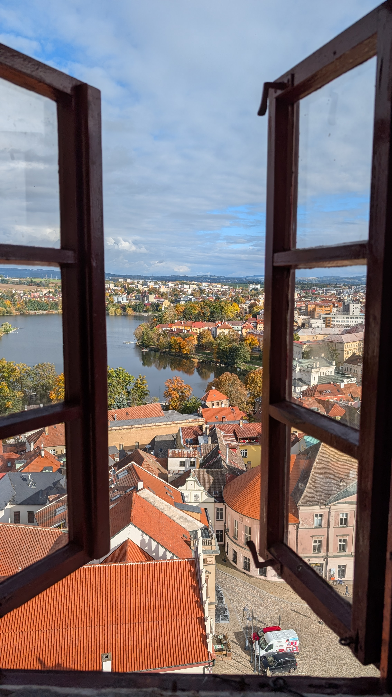
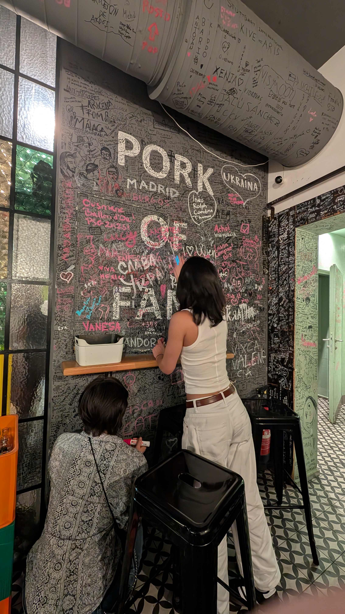

I believe that when people visit the US, a non-negotiable is to visit a national park so I would have been a hypocrite not to visit one while I was abroad. Bohemia Switzerland National Park was so beautiful it was easily my favorite trip I took while abroad. The trails were so well-designed and the entire park was accessible by public transit. Even the train ride there was breathtaking. We climbed the arch, explored the gorge and drank Pepsi mixed with beer (blame the Germans) while watching the sunset.
Budapest was one of the first trips I took with my friends in September. The best memory from this trip was the sunset river cruise. Most of the buildings in the city are centered around the river and are lit with warm yellowing lighting when the sun goes down. It was the perfect temperature outside and just a great end to a fun trip. Lots of sightseeing and eating were done in this city.


This was the last trip I took while I was abroad. We spent the day in Dresden looking at the historical sights. Everything there looks incredibly old but most things were rebuilt in the 1950s as the entire city was destroyed in the war. When the sun set we wandered around Christmas Markets that looked like they belonged in a Hallmark movie. It really put me into the holiday spirit and was a great send off before I traveled back home.


